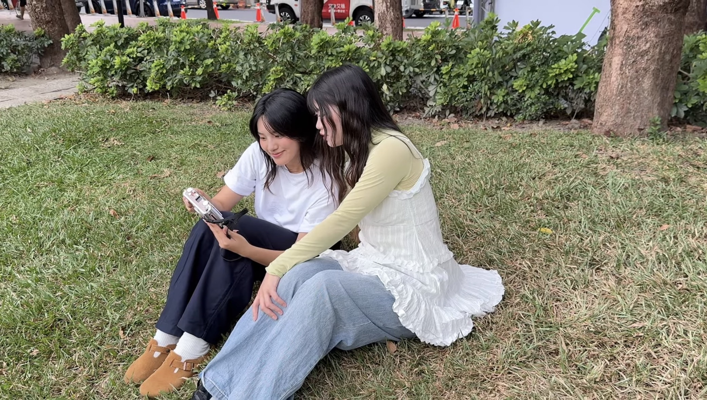
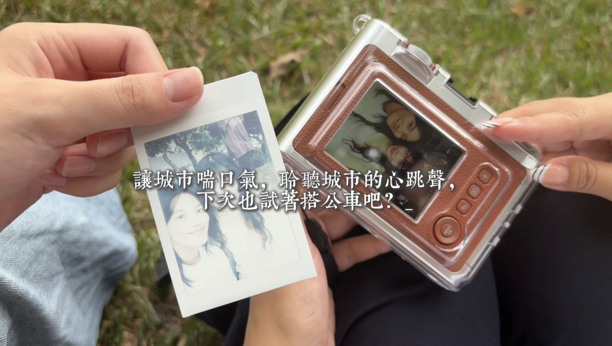

一、 影展主題起源與永續理念
我們身處在空氣品質不佳為常態的居住環境，隨著都市化迅速發展，交通廢氣與環境負擔日趨嚴重。這讓我們深刻意識到，身為當代青年與都市公民，我們必須為了這座城市的環境永續盡一份心力。
在科技發達、多元發展的現代交通工具中，屬純電動公車最為方便、環保且具備高普及性。坐著舒適安靜的電動公車，陪伴我們放慢緊繃的日常生活腳步。在低碳移動中漫遊台中，品嚐不一樣的在地味道，體驗一種特別的微觀感受，傾聽這繁華城市最真實的心跳聲。
二、 影音紀錄與專題預告片
透過影像鏡頭，記錄電動公車穿梭於台中街頭的寧靜身影與城市角落：
三、 永續漫遊三大核心主張
- 零碳低碳出行：搭乘純電動公車，大幅降低交通移動過程中的碳排放與廢氣污染，還給城市一片純淨藍天。
- 慢活城市視角：擺脫繁忙步調，透過公車大面車窗視角，以輕鬆穩定的速度重新觀察台中的街角與歷史建築。
- 在地美味體驗：結合台中幹線公車沿線的舊城區美食與文創聚落，用味覺與視覺品嚐屬於台中的獨特風味。
四、 四大主題影像巡禮



